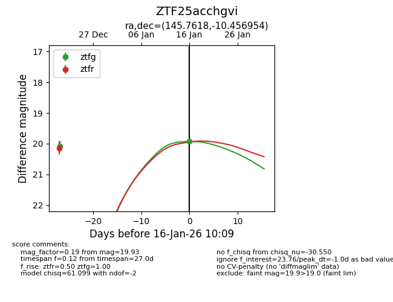
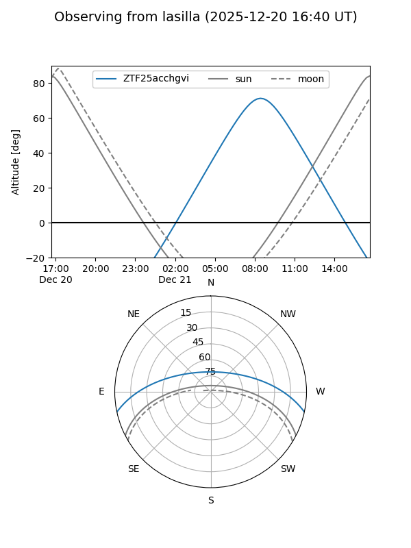
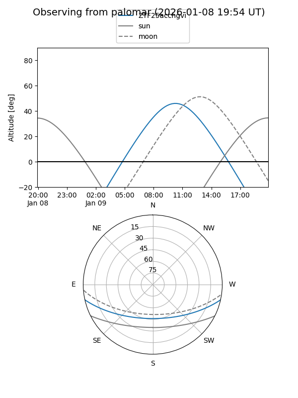
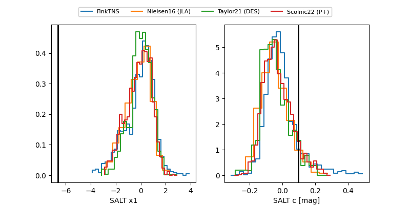

ZTF25acchgvi
Target ZTF25acchgvi at 2026-01-18 10:00
Aliases and brokers:
FINK: link
Lasair: link
ALeRCE: link
alt names
ZTF25acchgvi (ztf,fink_ztf)
Coordinates:
equatorial (ra, dec) = 145.7618,-10.45695
equatorial (HMS+DMS) = 09:43:02.82,-10:27:25.04
galactic (l, b) = (245.8751,+30.86636)
Flags:
Photometry:
last ztfg=20.06, ztfr=20.13
3 ztfg, 1 ztfr detections
Lightcurve

Visibility


Additional plots
